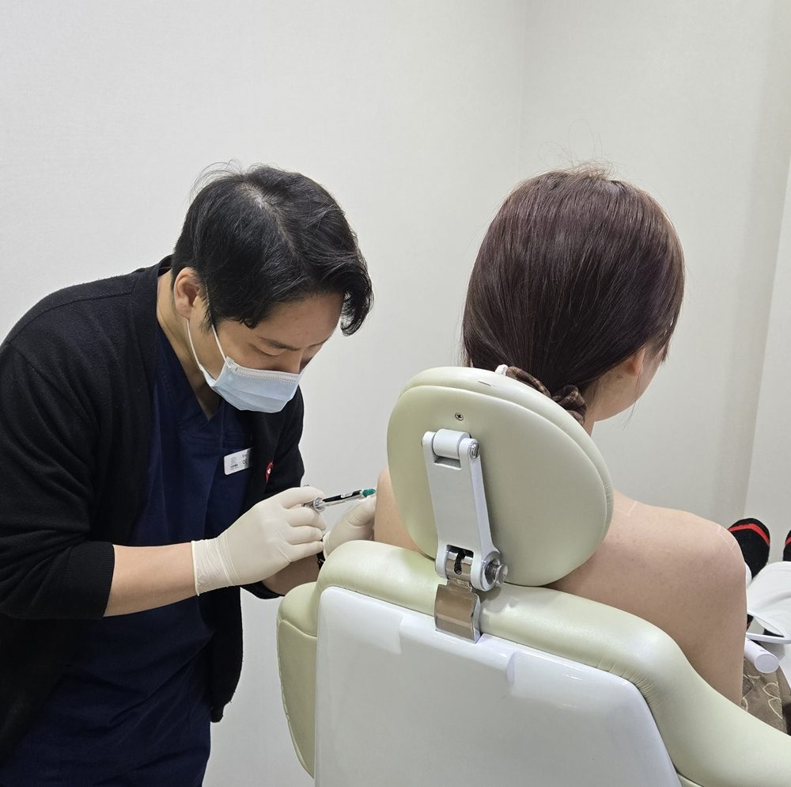
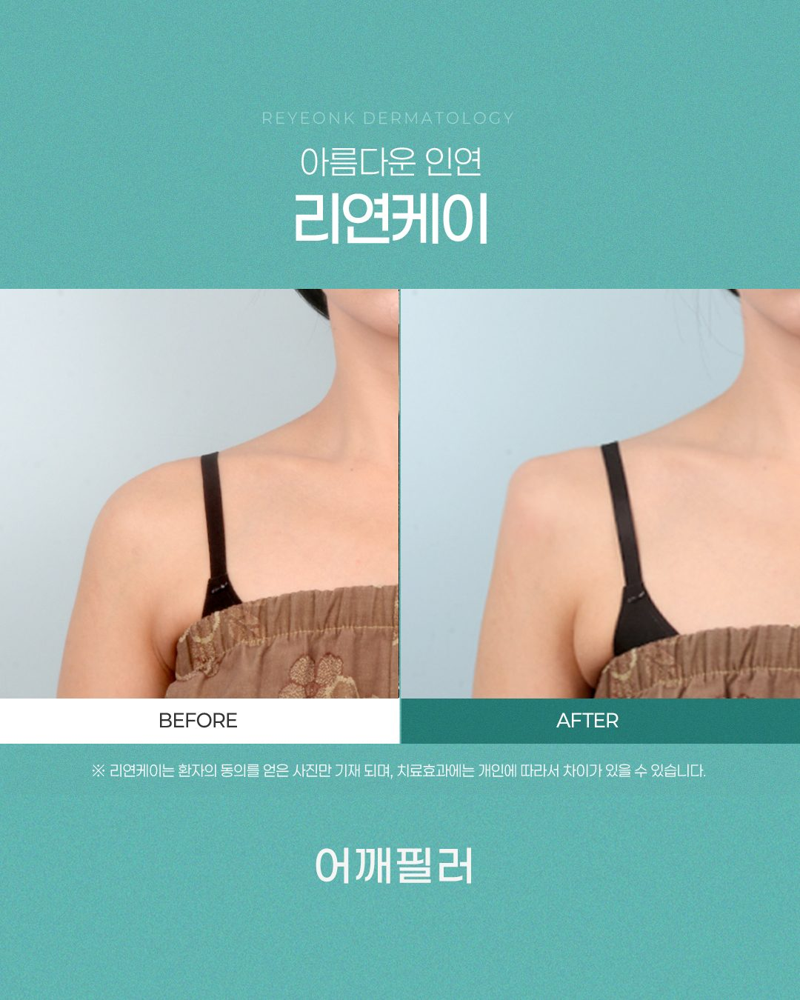
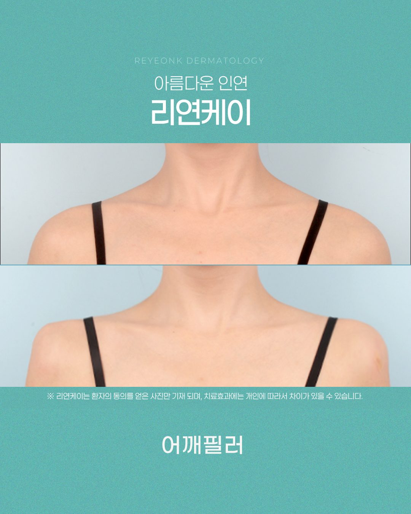

옷을 고를 때마다 어깨 라인이 마음에 걸린 적 있으신가요?
오프숄더를 입었는데 어깨가 말려 보이고, 슬리브리스는 라인이 밋밋해서 자꾸 카디건을 찾게 되는 경우가 많습니다. 드레스 피팅 날이나 스냅 촬영, 휴가 일정이 잡히면 더 신경 쓰이고요. 이럴 때 많이 찾는 시술이 어깨필러입니다.
어깨 끝(견봉 주변)의 꺼진 부분과 라인을 필러로 채워 어깨가 직각에 가깝게 보이도록 윤곽을 정리하는 시술입니다.
뼈나 근육을 바꾸는 시술이 아니라, 옷을 입었을 때의 실루엣을 다듬는 방식입니다.
가장 많이 받는 질문입니다. 용량은 많을수록 좋은 것이 아니라, 체형에 맞게 결정해야 합니다.
어깨는 면적이 넓어서 10~20cc가 필요하다고 생각하는 분이 많지만, 용량은 골격, 지방량, 승모근 발달 정도에 따라 달라집니다.
개인차가 있지만 4~6cc 정도의 적은 용량으로도 라인 정돈을 목표로 설계하는 경우가 많습니다. 최종 용량은 상담에서 정해집니다.
대용량 주입은 잘못된 층에 들어가거나 혈관을 침범할 위험, 표면이 울퉁불퉁해질 위험을 키웁니다.
핵심은 "얼마나 넣느냐"가 아니라 "어느 층에, 어떻게 나누어 넣느냐"입니다.

일반적으로 6개월~1년 정도로 안내되며, 필러 종류, 주입 부위, 평소 움직임과 운동량에 따라 차이가 있습니다.
직각 라인을 더 오래 유지하고 싶다면 약 5개월 전후에 상태를 보고 리터치를 고려할 수 있습니다.


※ 환자의 동의를 얻은 사진이며, 효과에는 개인차가 있을 수 있습니다.
가격은 필러 제품 종류, 주입 용량(cc), 시술 부위에 따라 달라집니다. 비교할 때는 금액만 보지 말고 아래를 함께 확인하세요.
제품 확인이 가능한지 확인하세요.
표시된 금액이 부가세 포함인지 별도인지 확인하세요.
시술 후 관리 범위를 함께 확인하세요.
상담한 의료진이 직접 시술하는지 확인하세요.
필러는 널리 쓰이는 시술이지만, 잘못된 층에 주입되거나 혈관을 침범하면 드물게 심각한 합병증이 생길 수 있어 시술자의 해부학 이해와 경험이 중요합니다.
붓기, 멍, 압통, 일시적인 비대칭 느낌
피부 변색이나 통증이 심해지는 경우 즉시 병원에 연락해 주세요.
상담 시간, 시술 층 설명, 응급 대처 시스템
리연케이는 골격과 지방 상태를 먼저 진단하고, 표면이 고르게 유지되도록 미량씩 층을 나누어 주입하는 방식으로 진행합니다.
드레스, 오프숄더, 슬리브리스 등을 가져가면 디자인 상담이 훨씬 쉬워요.
미리 찍어 두세요.
혈액응고 관련 약을 복용 중이라면 꼭 알려주세요.
촬영, 여행, 운동 일정을 공유하세요.
설명해 주는지 확인하세요.
어깨 라인과 쇄골 라인은 함께 설계하면 전체 실루엣이 자연스럽습니다.
상담에서 체형을 보고 필요한 부위만 제안드립니다. 모든 부위를 다 하실 필요는 없습니다.
상담과 디자인 포함 보통 1시간 내외이며, 개인별로 다릅니다.
대부분 가능하지만, 시술 후 며칠은 강한 어깨 운동과 마사지를 피하시길 권합니다.
히알루론산 필러는 분해 주사로 조절이 가능한 경우가 있습니다. 제품에 따라 다르니 상담 때 확인하세요.
임신 중에는 시술을 권하지 않습니다. 계획이 있다면 의료진과 일정을 상의하세요.
내 어깨에 몇 cc가 맞는지, 일정에 맞출 수 있는지 궁금하시다면.
어깨필러 상담을 편하게 문의해 주세요. 리연케이의원에서 1:1 상담으로 내 체형에 맞는 방법을 안내해 드립니다.
※ 본 글은 일반적인 정보 제공을 위한 것이며, 시술 효과와 부작용은 개인에 따라 다를 수 있습니다. 정확한 진단과 시술 여부는 의료진 상담 후 결정됩니다.